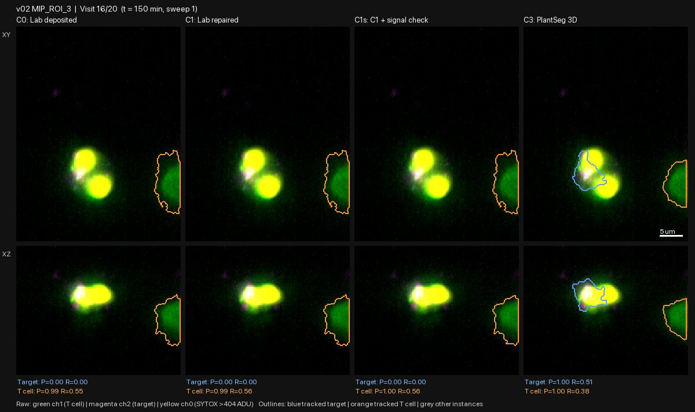
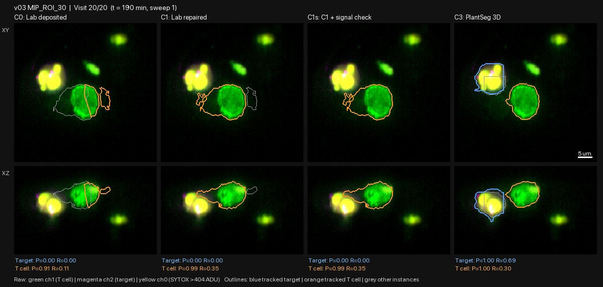
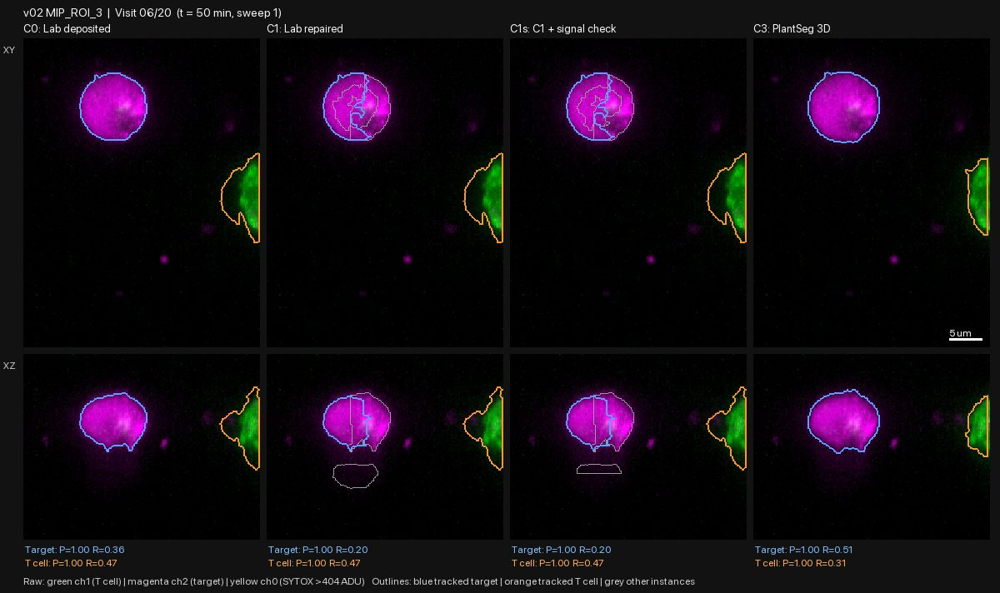
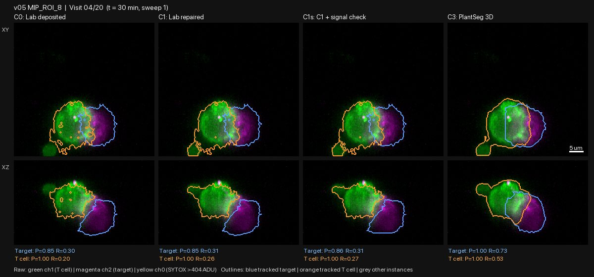
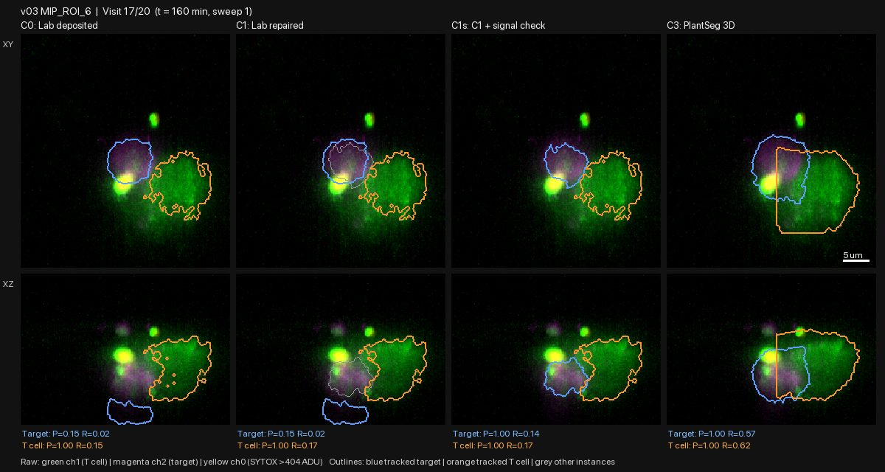

Re-segmentation pilot P2: 8 chambers; PlantSeg leads, lab masks drop dead cells
| ID | 2026-10-29-01-re-segmentation-pilot-p2-eight-chambers-plantse | Date | 2026-10-29 |
|---|---|---|---|
| Gate | G1 | Status | reviewed |
| Author | claude | Reviewers | claude |
| Signoff | — | Commits | 6ad8e8a |
| Datasets | raw_volumes, lab_masks, step4_death_labels_v2 | Protocols | gallery-review@v1 |
| Galleries | — | Supersedes / By | — / — |
Question
After the P1 review (entry 2026-10-28-09), which way of outlining cells should we build on? P2 compared four candidates on sweep 1 of all 20 visits in all 8 pilot chambers (4 killed, 4 survived; 160 images per candidate):
- C0: the lab's masks as published.
- C1: the lab's masks repaired.
- C1s: C1 with mask parts that have no cell signal under them removed.
- C3: PlantSeg 3D with the P1 rectangle bug fixed.
What was run
src/seg/candidates.py and src/seg/make_pilot_movie.py in conda env seg,
run by agy (Argon High); report .agy_pilot2_report.md. Outputs:
data/pilot_seg/pilot2_metrics.csv, figures/pilot/
Time per 3D image: C0 0.1 s, C1 0.5 s, C1s 2 s, C3 4 s.
agy also added an agreement score, printed under each panel: - P: the share of the mask that has signal under it. - R: the share of the signal blob the mask covers.
What was looked at
All 160 frames, 4 candidates each, reviewed by Claude as contact sheets with key frames checked at full size.
Observations
1. The lab masks drop dead target cells. Once a target fills with death dye (yellow), C0, C1 and C1s have no target at all (P = R = 0). C3 still outlines it. Seen in: - v02 ROI 3, visits 16-19; - v02 ROI 32, visit 20; - v03 ROI 6, visits 19-20; - v03 ROI 30, visit 20.
This probably explains the flickering death calls seen in the movies (entry 2026-10-28-08). A death is called from dye inside the masked target, so when the dead cell drops out of the mask, it reads as alive again. Two chambers labelled "survived" (v02 ROI 3 and v03 ROI 30) contain a dead tumour cell at the end; one of them may be the contacted target. Our death labels inherit this problem from the lab's masks.


2. C1's repair over-splits single cells. In v02 ROI 3 (visits 4-8 and 12) and v01 ROI 2 (visits 1-5), one round tumour cell is cut into 2-4 pieces. In C1 and C1s the tracked target is then only one of the pieces. The repair that split the merged targets in v01 ROI 32 also splits cells that were whole.

3. C1s only partly fixes the phantom pieces. - It removes the floating lobes in v01 ROI 32. - Grey signal-free outlines below the cells remain in v02 ROI 32 (visits 15-20). - Its slice-by-slice pruning leaves flat, boxy cuts (v01 ROI 32 visit 1; v05 ROI 8 visit 17).
4. C3 PlantSeg is the best overall. It fits the signal tightly, outlines each round cell as one object, keeps dead cells, and outlines cells that the lab masks miss (e.g. v03 ROI 30, visits 14-18). Its remaining defects: - Straight-line cuts. Boundaries between touching cells, and sometimes cell edges, are straight lines or boxes rather than following the membrane. Seen in v02 ROI 32 (visits 8, 10, 12, 16), v03 ROI 6 (visits 14 and 17-20) and v05 ROI 8 (visits 3-5, 11, 19). The likely cause is the P2 fix itself: with boundary evidence switched off near the cell surface, the watershed splits by distance alone, which gives flat planes. - The T cell occasionally swallows part of the target or a nearby dead cell (v03 ROI 6, visits 13-14). - A few visits where part of the T cell is cut off (v04 ROI 24, visit 2).


5. The agreement score does not work. Median P is 1.00 for every candidate in 7 of 8 chambers, including masks with obvious signal-free lobes (only v05 ROI 8 is lower). R is 0.1-0.5 for all candidates, because touching cells share one signal blob. It cannot rank candidates or flag bad frames, so it is not yet usable for clean rule v2.
agy's report described the fixed C3 as free of artefacts in 0/160 visits ("0/160 visits exhibit slice-carving"). The specific striped rectangle is gone, but the frames show other straight-line artefacts.
Decision
- Build on C3 (PlantSeg). Drop C1 and C1s. Keep C0 only as the reference.
- Pilot P3:
- Fix C3's straight-line cuts: restore membrane evidence for the boundaries between touching cells, and do not let the watershed cut by distance alone.
- Replace the agreement score with one that can fail: compare each mask with the signal at its own boundary (membrane intensity along the outline, and how much signal lies just outside it).
- Link cells across visits (tracking), so that the contacted target keeps its identity, including after it dies.
- Death labels (G2) must be redone on the new masks. Recheck v02 ROI 3 and v03 ROI 30 first: did the contacted target die after contact ended?
- No result that depends on death labels or lab masks moves forward until then.